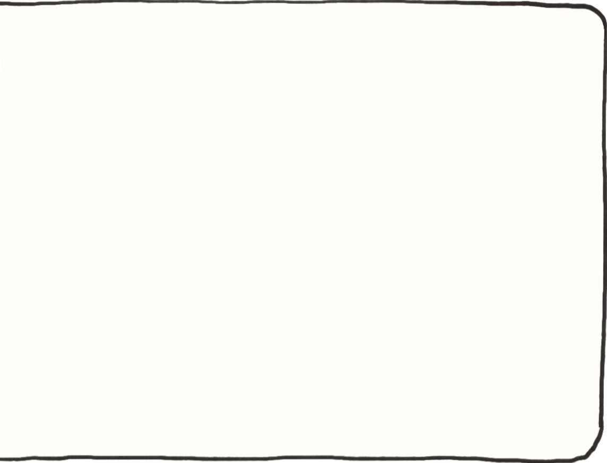

The reading got me thinking about website as an art gallery, an art piece that displays art pieces inside, but the architect and the artists are the same person. With the nature of a digital creation, the space would be a temporal medium that evolves alongside the artist. The composition shifts based on the context of the work inside, and the website becomes one's identity.
The reading starts with the shutdown of Geocities, a web hosting service, which reveals a complex digital ecosystem and the nature of digital interfaces. One interesting idea is the contradiction of preservation that comes from the destruction. Before the site fully shutdown, people archived its pages, turning websites into artifacts almost like moving them to a museum. This makes me think about digital footprints we leave behind every day and how they can disappear or become a history. Another concept is digital ruins. Digital content can be constantly updated and adjusted, which makes them feel young. But when Geocities disappeared, many sites showed broken links. Additionally the relationship between physical interface and the web is intriguing, older pages were designed to suit older screen version with different dimension. This illustrated that websites can age. Many modern websites try to replicate the retro web aesthetics. I wonder if digital artifacts are meaningful in the same way physical artifacts are? How do we determine the value of something? Who should be responsible for preserving digital culture?
I agree with the perspective. The reach of the web is so totalizing that it fundamentally shifted how artwork is consumed. The production method could stay the same, but we cannot argue that the meaning and consumption has the intention to present online, making sure the work could be photographed or present digitally. This connectivity we have has evolved the way the world functions, and this is not necessarily a negative thing. It's just natural progression of culture. It could be said that the internet is an entirely new art medium that lets artists present themselves in a new meaningful way. Artists role shifted from a creator into a curator and story teller of their identity. We could also even argue that the internet has revived the ideal of a renaissance man.
In the reading, the authors frame alt-text as a creative practice. Instead of treating it as a written description that only serves technical purpose as accessibility tool for the blinds, they challenge the tool to enforce poetic aspects from subjective translation of image to text. Different people will write different description and there's no one answer. Personally I find it interesting how the authors reframe accessbility not as an add-on but a part of the creative process. It really emphasizes the attention a creator needs to put in every detail, even word choice can create a new experience. However, I wonder about the balance between artistry and functionality. How do we determine where poetic description stops being an accessibility tool and becomes a barrier for users?
The reading argues that computer is not neutral because it is embedded with the creator's cultural and linguistic barrier. Because the technology was built on English-centric language, it is not accessible or inclusive by nature. When presented with a language that has totally different structure like Arabic, the tool fails to render the language correctly. However, if we look at the nature of things, once we move beyond raw math, there could be no neutrality. Human mapping meaning to things will always be subjective and political.Coming from Thailand where English is not our native language, I experienced how language is framed as the most basic requirement for survival in the modern world. But it also got me thinking about countries like China develop its own computer language to signify independence from Western standards, and how political power are tied to language.
The author argues that graphic design has shifted into a semi-automated task shaped by tools and platforms limitation. With templates, the barrier of entry is lowered, and anyone can perform the basic tasks of graphic design, so design becomes a semi-professional. On the other hand, designers authority are limited by these tools and what they produce are now the result of the system they use. When combined with the nature of digital work that requires software and hardware to display (application, screen etc.) designers now have to follow a strict set of guidelines. It's interesting to think about the core value of a designer and if it's still a relevant profession. And whether designers are losing their autonomy to platforms and algorithms or they are just another creative medium designers need to utilize their skills to create provocation.
Vera Frenkel's String Games was a performative art utilizing the telecommunication as creative medium and substituting physical connection with symbols and gestures. It was the epitome of human relationship in the modern era, virtually connected yet physically separated. It's argued that virtual connections create an incomplete connection. Her later work, Body Missing, deals with the memory of stolen artwork during the Holocaust. It uses several technology such as video and website to explore the traces of these memory and their disappearance. Vera Frenkel works with digital media to emphasize the blurred boundaries surrounding these new mediums. She argues the mediums create absence, but one could also argue that they fill the absence by preserving traces of presence. This made me question whether technology ultimately reveals absence, and what does memory becomes when it exist only in digital form?
The author explores the differences between traditional publishing and modern digital media. The traditional format focuses on deliberately deliver an idea to audience by drawing the viewers to focus on them. Meanwhile the digital media is a continuous shifting information through threads and interactions. I found the act of archiving as a resistance fascinating. Moving the information from digital to physical form reclaims the environment where the information is consumed. Digital feeds are influenced by layouts and interfaces that function through scrolling and constant movement, while the physical, such as printing, fix them in place and force viewers to interact with them deliberately. But if we change the environment but the content is still the same, will we subconsciously look at it differently or we just change the way we look at it? One idea that got me curious is how digital feed resembles our brain. Digital media information flows seamlessly similar to how brain jumps from one thought to the next without carefully examining it. If the digital feed moves similarly to our minds, how does the nature of the consumption impact our perception? And if algorithms shape what we consume how much of our thinking is our own?
The author argues that the internet has shifted from a space of creativity, community, and personal expression, into a space dominated by corporates, rigidity, and algorithms. It is a common course of development with new technology. In the beginning, technology provides convenience to only those who can afford, but overtime it becomes industrialized (creativity expression was reduced in the process) and more accessible to the masses. I really resonate with the essay because it explains why the internet feels exhausting and monotonous today. To make things easy to evaluate and consume, everything seems to follow a template or checklist. We become dependent to only a handful of platforms that shape how we communicate and express ourselves. One idea that stood out is the concept of radical monopoly. We rely on certain social media to share things. In a way this limits the creative expression to certain forms. I appreciate the author's suggestion on using personal website as a way of resisting. However, I wonder about the balance between accessibility and creativity. Personally, I think the core problem is people's preference for perfection, hence the gravitation to pre-made things. That's why I prefer the author's take on letting us be bad at something. I find the idea of imperfection refreshing. On the other hand I wonder about letting human be human and play with the limitations of platforms. Maybe personal expression shines the brightest in the most rigid space?
The reading argues that the internet transforms how art is appreciated. Traditional artwork is secretive and immersive, making viewers absorb only the end, fictitious, product, while the post-internet art is more documentation based, guiding viewers along the creation process. The act of watching the process is not art, rather an observation. When the creative process becomes the product it starts to feel more like a technical performance which institutions learned to market. Nevertheless the end result is what I consider as art regardless of the format it is presented in. A better question from the reading is, who are we producing for, people or machines? As the world becomes governed by algorithms, we're producing and optimizing for systems that determine our value via views and likes count. Nevertheless I believe the author treats the internet too rigidly. For me it is just another creative medium and what matters is the intention. There is a difference between someone publishing on their personal site and someone performing for engagement.